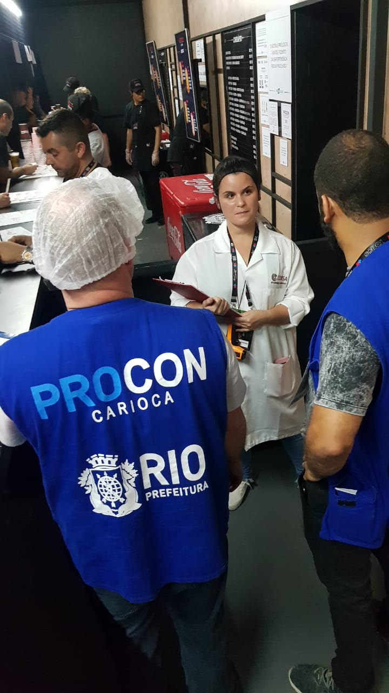

My Professional Profile
by Marianna Cereto Carvalho
For over 7 years, I have been a dedicated nutritionist specializing in food safety and sanitation. My career has allowed me to work in diverse settings, including restaurant kitchens, hotel food service operations, and large-scale events. I am passionate about ensuring the health and well-being of individuals by implementing and maintaining rigorous food safety standards.
Some of my responsabilities:
- Conducting thorough food safety audits and inspections
- Developing and implementing comprehensive food safety plans
- Training staff on proper food handling and hygiene practices
- Monitoring food preparation and storage procedures
- Investigating and resolving foodborne illness outbreaks
⭐Click here to know more about Sanitary Surveillance in Brazil.
Sharing some pictures of my work:
In cronological order
- My first job was in a plastic surgery clinic where I provided care to patients before and after their surgeries.
- Some funny photos from my inspections.
- While I was working, I had the opportunity to learn about and experience the cuisine of other countries.
- I was the technical manager at a hotel where I was responsible for the employee cafeteria menu.
- I worked on major events, such as Rock In Rio, performing sanitary inspections and receiving inspectors from the regulatory agency.
